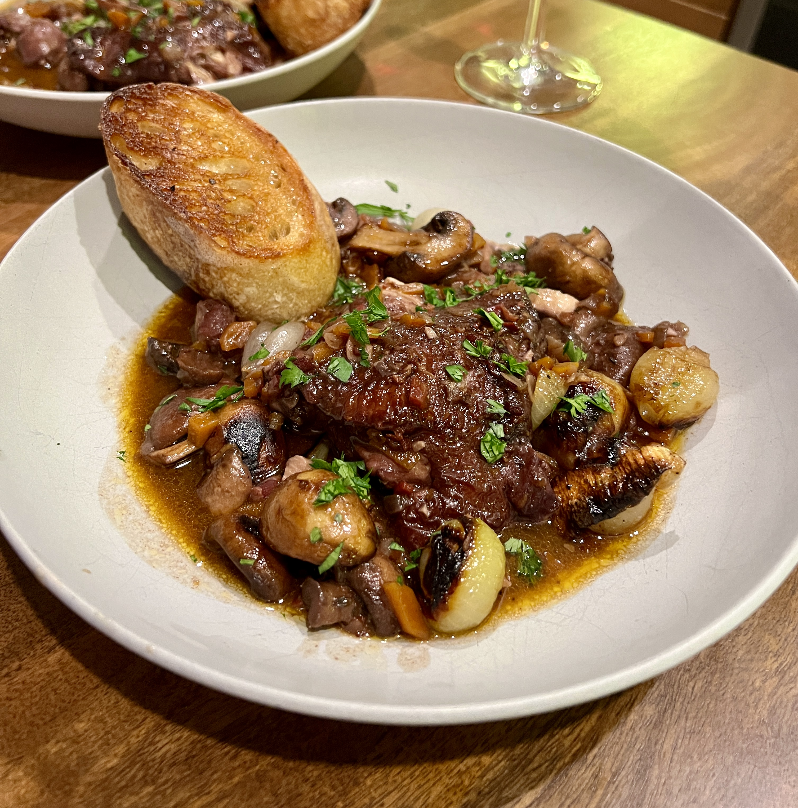

Coq Au Vin
Both deceptively easy and difficult, this Julia Childs approved meal works as a crowd pleaser and a confidence booster in the kitchen. The beauty in this dish lies in the braising of the chicken after its been soaked in a red wine with aromatics overnight. It's a meal that works in all seasons and the payoff is worth the time in locating the ingrdients. This dish is an excellent introduction into the world of involved home cooking. Bon apetit!
- Like many other french stews and stews in general, it tastes even better the next day
- You get to say something french and sound like you grew up in Burgundy
- Did I mention it was delicious?